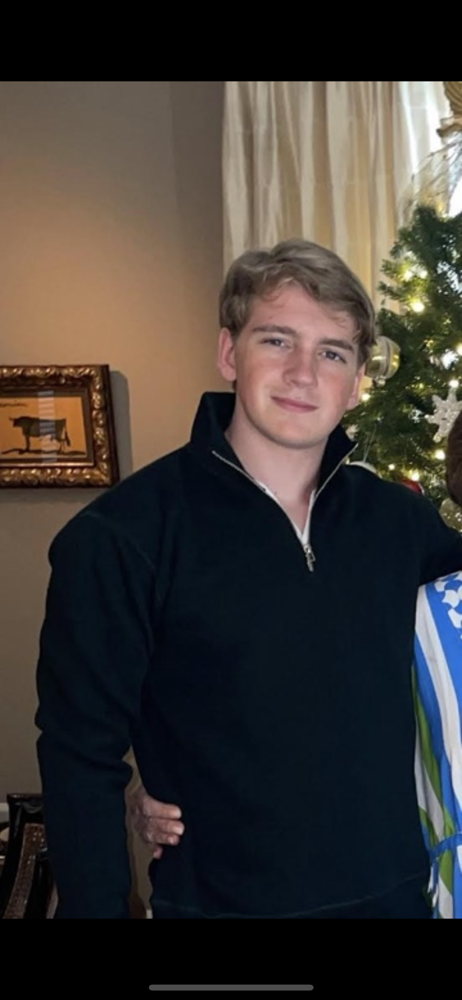

NICHOLAS KERKMEESTER
— HERACLITUS · FRAGMENT B12
ECONOMICS · FINANCE · RESEARCH
NICHOLAS KERKMEESTER
— HERACLITUS · FRAGMENT B12
ECONOMICS · FINANCE · RESEARCH
ECONOMICS · FINANCIAL MARKETS · INVESTMENT RESEARCH
Curiosity about value, markets, and the decisions that shape them.

I am an Economics and Business Economics student at Erasmus University Rotterdam, currently studying at ESSEC Business School in France.
Having lived and studied across Brazil, New Zealand, and the Netherlands, I have developed an interest in understanding how businesses, markets, and institutions operate across different environments.
My academic and extracurricular work focuses on financial markets, valuation, and private equity. Through student investment research, company analysis, and transaction modelling, I have become increasingly interested in the decisions that determine where capital is allocated and how value is created.
Outside of finance, sport and student leadership have been important parts of my development. I value disciplined preparation, collaborative work, and the willingness to question an investment thesis before defending it.
© 2026 Nicholas Kerkmeester